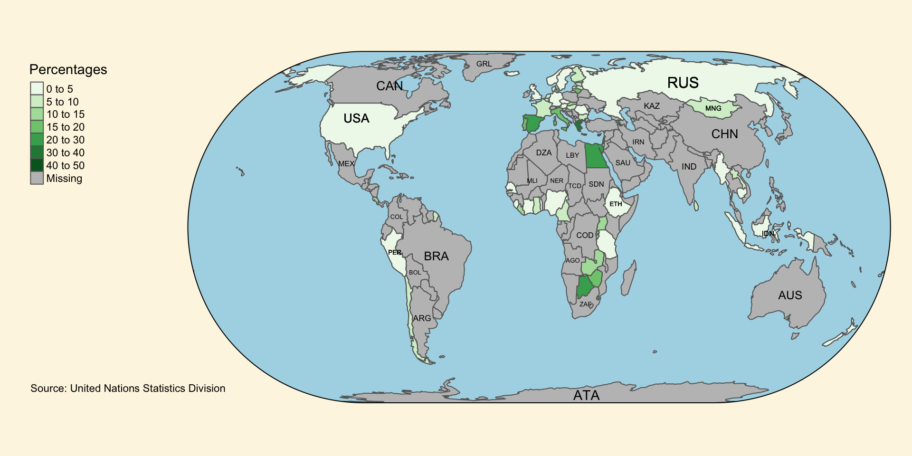

CSC3007-Team-Black-2
Relationship between nation’s legal framework achievements in gender equality and woman’s success in the economy.
Purpose of This Presentation
In a report published by the International Monetary Fund titled “Tackling Legal Impediments to Women’s Economic Empowerment”1 2022, The report highlighted how legal framework has help improve woman’s success in the economy of various countries such as Iceland, Peru & Rwanda.
Purpose of This Presentation (cont)
This presentation thus aims to explore the relationship between nation’s legal framework achievements in gender equality and woman’s success in the economy. offering insights into the significance of legal framework in gender equality and woman’s status in a country economy.
Research Questions
To what extent does a nation’s legal framework on gender equality affect economic growth for women?
Specifically, what is the relationship between a nation’s legal framework achievements in gender equality and woman’s success in the economy?
Can GDP, Happy Planet Index Score and Continent serve as predictors for a nation’s legal framework achievements in gender equality & proportion of women in managerial positions?
Importance of This Research
- Economic empowerment:
The economic empowerment of women has broader implications for overall economic development.
- Policy formulation:
Inform policymakers and lawmakers about the effectiveness and relevance of legal frameworks in fostering economic growth for women.
Importance of This Research
- Gender equality:
The impact of these legal frameworks is crucial in advancing gender equality efforts.
- Societal impact:
Sheds light on the potential benefits and consequences of legal frameworks on economic growth, impacting woman’s lives and opportunities.
UN Sustainable Development Goals
Women participation in the economy is related to Goals 5 and 8.

Selected Indicators
Indicator 5.1.1: Legal frameworks that promote, enforce and monitor gender equality (percentage of achievement 0 - 100) -- Area 3: employment and economic benefits
Indicator 5.5.2: Proportion of women in managerial positions
Indicator 8.5.1: Average hourly earnings of employees by sex, age, occupation and persons with disabilities
Indicator 8.5.2: Unemployment rate by sex, age and persons with disabilities
Map of Percentage of Achievement in Legal Frameworks on Gender Equality

Map of Proportion of Women in Managerial Positions

Anticipation of the effect of Legal Gender Equality Frameworks on Women in Managerial Positions
We anticipate that the higher the nation’s legal framework achievements in gender equality will result in a higher percentage of women holding managerial positions.
- Because the chance of gender-based discrimination should be reduced as a result of the legal frameworks in place, this should result in better opportunities for women to hold managerial positions.
Legal Frameworks on Gender Equality vs Women in Managerial Positions
There seem to be a weak correlation between the percentage of achievement in legal employment and benefit frameworks for females, and the percentage of women in managerial position. The data distribution for the percentage of achievement in legal employment is left skewed and percentage of woman in managerial position is normally distributed.
Legal Frameworks on Gender Equality vs Women in Managerial Positions Re-expressed
The percentage of achievement in legal employment is re-expressed by taking the squared root of the skewed values. This helps to reduce the impact of extreme values and make the distribution more symmetrical. This resulted in an higher correlation significance value increase by 0.021, making it slightly more correlated.
Map of Average Hourly Earning by Women
Daily USD exchange rate as at end of day 2023-07-19 GMT Map of Unemployment Rate of Women
Anticipation of effects of unemployment rates on hourly earnings for women
We anticipate that countries with lower unemployment rates for women should have higher average hourly earnings for women.
- Because countries with lower unemployment rates have a better economic environment which should result in higher average income for their citizens
Unemployment Rates vs Hourly Earnings FOR Women
A correlation of -0.097 indicates a weak negative relationship between unemployment rate for women and average hourly earning (USD) for women. Both data distribution are right-skewed.
Unemployment Rates vs Hourly Earnings FOR Women re-expressed
The two indicators are transformed using square root and logarithm respectively, making extreme values more symmetrical. This resulted in an insignificant correlation value increase by 0.103, with a correlation that is very close to zero, indicating that there is virtually no relationship between them.
Table of Women Economical Success
Anticipation of what Achievement of Legal Frameworks on Gender Equality does to Female Unemployment
We anticipate that having a higher the nation’s legal framework achievements on gender equality would result in lower unemployment rate for women.
- Because by decreasing gender discrimination for women, more companies would be willing to employ women.
Legal Frameworks on Gender Equality vs Female Unemployment
There doesn’t seem to be any significant correlation between the percentage of legal employment and benefit frameworks for females, and the unemployment rate of females. However, this might be due to skewed distributions, hence we will re-express this data.
Legal Frameworks on Gender Equality vs Female Unemployment Re-Expressed
After logarithmic and square root transformations, correlation coefficient seems to have improved positively. However, it still appears to be insignificant.
This might be due to countries having an already-high unemployment rate irregardless of gender.
Anticipation of women in managerial positions on women average hourly earnings
We anticipate that having more women in managerial positions will increase the average hourly earning for female employees.
- Because in general, employees in a managerial position would receive higher income and with more women holding managerial positions, the average hourly earning for female employees will increase.
women in managerial positions vs women average hourly earnings
There seems to be a negative correlation between the percentage of female hourly earnings and women in managerial positions. However, this might be due to skewed distributions of female hourly earnings, hence we will re-express this data using logarithmic transformations .
women in managerial positions vs women average hourly earnings re-expressed
There still seems to be a negative correlation between the percentage of female hourly earnings and women in managerial positions after logarithmic transformations .
Comparison of the four indicators
K-Means Clustering
Considering the four selected Sustainable Development Goals, what is an appropriate number, k, of clusters for countries?
The ‘elbow criterion’ suggests k = 2 or 3. We choose k=3, but this decision is admittedly subjective.
Pairs Plot Highlighting Clusters
1. High Achievement of Legal Frameworks on Gender Equality and High Female earnings
2. High Achievement of Legal Frameworks on Gender Equality and Low Women in Managerial Positions
3. High Achievement of Legal Frameworks on Gender Equality and High Percentage of Women in Managerial Positions
Decision Tree (Classification)
Can the cluster assignment be predicted based on the country’s GDP, Happy Planet Index Score and Continent?

1. High Achievement of Legal Frameworks on Gender Equality and High Female earnings
2. High Achievement of Legal Frameworks on Gender Equality and Low Women in Managerial Positions
3. High Achievement of Legal Frameworks on Gender Equality and High Percentage of Women in Managerial Positions
Evaluation of Decision Tree
Ten-fold cross validation indicates that the decision tree has a accuracy of 0.12.
Kappa Value is shown to be -0.3587879.
The relative importance of the predictors for classification are as follows:
- HPI: 1
- GDP: 0.9038487
- Continent: 0.6265394
Summary of Quantitative Results
- Correlation between same-goal indicators.
- Correlation between legal employment and benefit frameworks for females and the representation of women in managerial positions.
- No correlation between female hourly earnings USD and females unemployment rate.
- Little correlations of statistical significance are observed between indicators for different goals.
- Potentially influenced by the country’s originally high unemployment rates across all genders.
- Many missing. Only 35 of 68 countries have data for all four indicators.
Policy Implications
- Achievement of Legal Frameworks on Gender Equality does indeed affect Economic Growth for women.
- Higher Achievement of Legal Frameworks on Gender Equality has a strong correlation with higher Average Hourly Earnings for Women.
- HPI does serve as a predictor for a nation’s legal framework achievements in gender equality & proportion of women in managerial positions.
- Assist nations in enhancing their data gathering methods to facilitate informed decision-making.
Thank You
CHIA YI XUAN, TSUI SAU CHI, JEANIE OH JUN NING, VARADHARAJAN JAYAPRIYA, GU JINMING, WONG JUN HAO